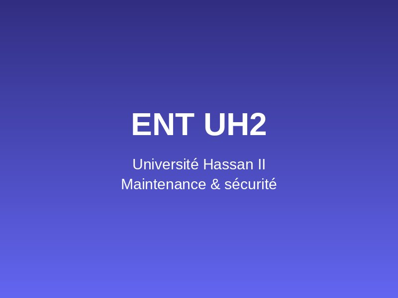
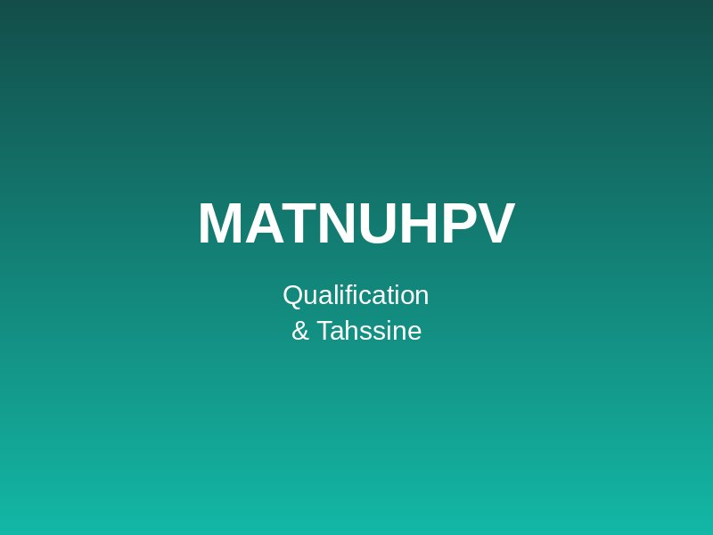
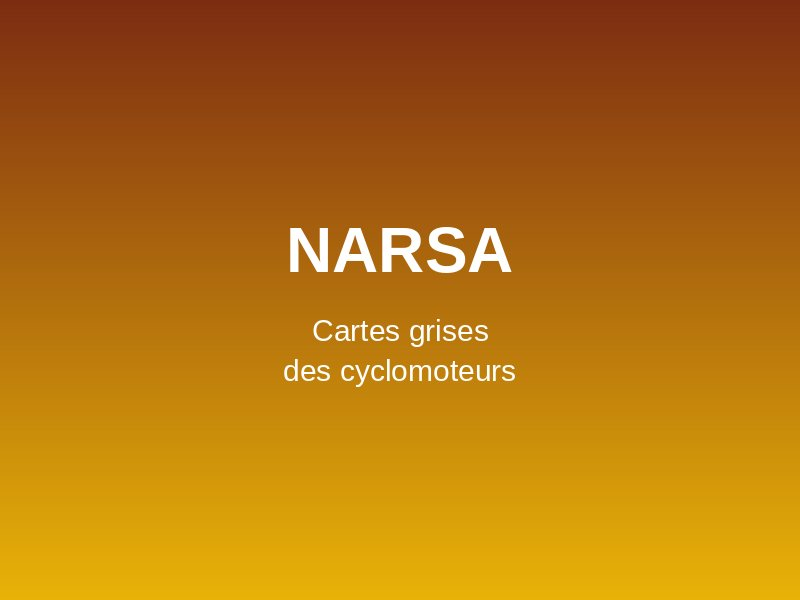
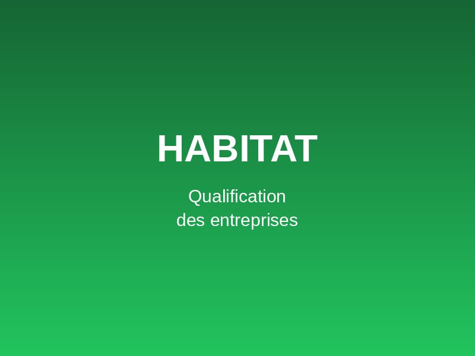
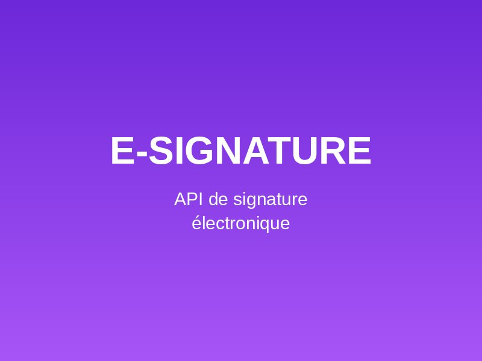
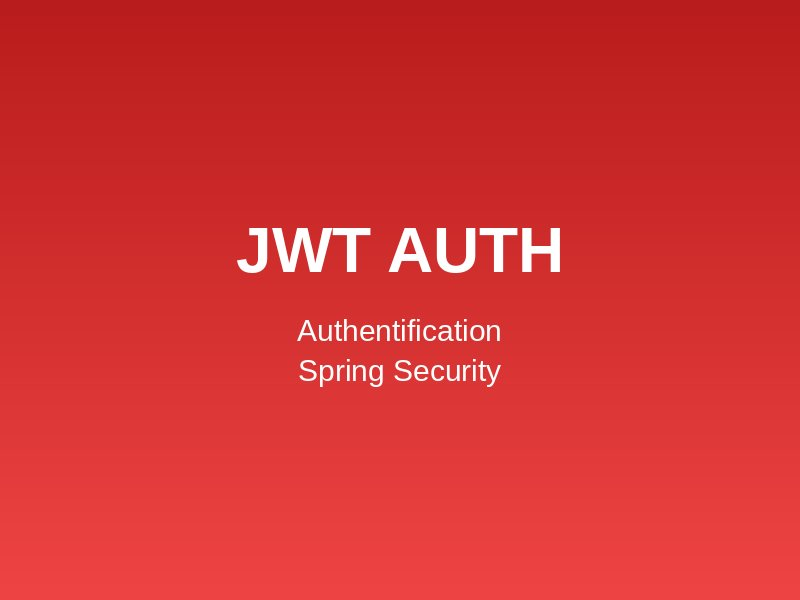

Retour au portfolio
Mes projets
Projets réalisés dans le cadre de mes expériences professionnelles. Ils sont confidentiels : le code source et les captures d'écran réelles ne sont pas publics.

ENT – Espace Numérique de Travail de l'Université Hassan II
- Maintenance corrective et évolutive de la plateforme.
- Analyse et correction de failles de sécurité.
- Interventions sur le back-end Spring Boot, le front-end Angular et le portail Drupal.

MATNUHPV – Applications Qualification & Tahssine
Maintenance des applications Qualification et Tahssine du Ministère de l'Aménagement du Territoire National, de l'Urbanisme, de l'Habitat et de la Politique de la Ville.

NARSA – Gestion des cartes grises des cyclomoteurs
Plateforme de l'Agence Nationale de la Sécurité Routière pour gérer l'immatriculation des cyclomoteurs.
- Demandes d'immatriculation, de mutation et de duplicata, avec contrôle de conformité des pièces justificatives.
- Gestion des oppositions (ajout, consultation, régularisation) et réservation de numéros d'immatriculation.
- Authentification JWT, gestion des rôles et des permissions.
- Interface bilingue français / arabe avec affichage de droite à gauche (RTL).
- Conteneurisation Docker, intégration continue Jenkins et déploiement derrière Nginx.
SGIA – Système de Gestion des Investissements et des Achats
Plateforme centrale de gestion des dépenses et des marchés au sein du Ministère de l'Équipement et de l'Eau.

Système de qualification des entreprises « Habitat »
- Suivi des demandes de qualification et de certification déposées par les entreprises.
- Génération automatique des procès-verbaux (PV) et des certificats.
- Intégration d'une API de signature électronique.

API de signature électronique
API développée pour signer électroniquement les documents produits par le système de qualification (PV, certificats).

Application cartographique de suivi de projets
- Localisation des projets sur une carte interactive.
- Filtres multicritères et calculs sur les projets affichés.
- Visualisation des indicateurs sous forme de graphiques.

Application de gestion de projets (Kanban)
- Espaces de travail partagés par une équipe.
- Listes et cartes de tâches par statut : à faire, en cours, terminé.

Authentification et autorisation JWT
- Authentification par jetons JWT.
- Gestion des rôles et des permissions.
- Protection contre les failles web courantes.